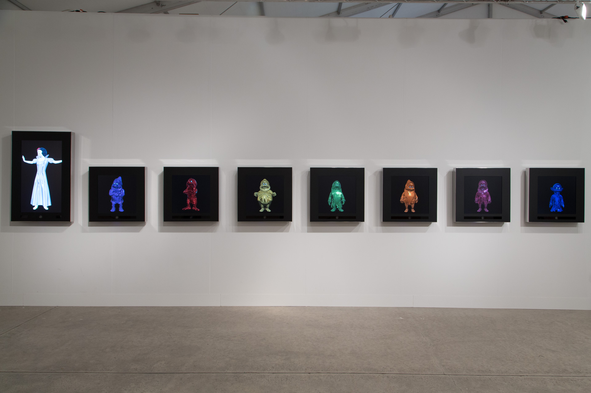

Bibliographie
Issue d’une famille italienne venue de Vénétie et d’une lignée de filles uniques parisiennes. C’est sur les terres de la région bordelaise que son père, peintre à ses heures perdues, et sa mère, férue d’histoire et de voyages, se rencontrent en ces temps de mai 68.
Période faste des années insouciantes, Lucile Callegari grandit dans un environnement intellectuel et artistique actif ; les voyages et le pluriculturalisme sous toutes ses formes l’exaltent.
Diplômée en Histoire des Arts et Archéologie de l’université de Bordeaux III, c’est au contact du milieu associatif et artistique qu’elle s’enrichit ; la communication et la médiation sont les domaines à travers lesquels elles évoluent.
A la suite d’un choc émotionnel, brutal et irréversible, la création s’impose à elle. Autodidacte, le choix du médium, la peinture, et du sujet, la femme comme modèle, sont une évidence. Travail de l’inconscient, son destin entrevoit cette lumière, la transcendance devient son guide.
Le choix unique du portrait féminin s’impose à elle ; travail sur l’humain avec l’infinité de possibilités de traitement esthétique et émotionnel qu’il offre. Rien n’est défini à l’avance et ce processus de création révèle son inconscient ainsi matérialisé. Ces femmes sont le reflet d’elle-même, leur regard est le reflet de son âme.
Le visage prend forme avec rapidité et énergie. Le modèle disparaît dés les premières touches ; le réel est modifié et ne devient que mise en scène, prétexte à la confrontation d’un face à face.Témoignage d’une réalité perdue, transcendée par la multiplication et la variation infinie de l’image féminine, ainsi devenue universelle et intemporelle ; pluralité des modèles pour ne faire qu’un.
C’est bien sa nature profonde et intime qui transparaît dans ses œuvres. C’est alors que l’œil extérieur et subjectif du spectateur peut imaginer l’histoire, sa propre histoire car l’art du portrait n’est qu’une histoire de rencontre…
Oeuvres
